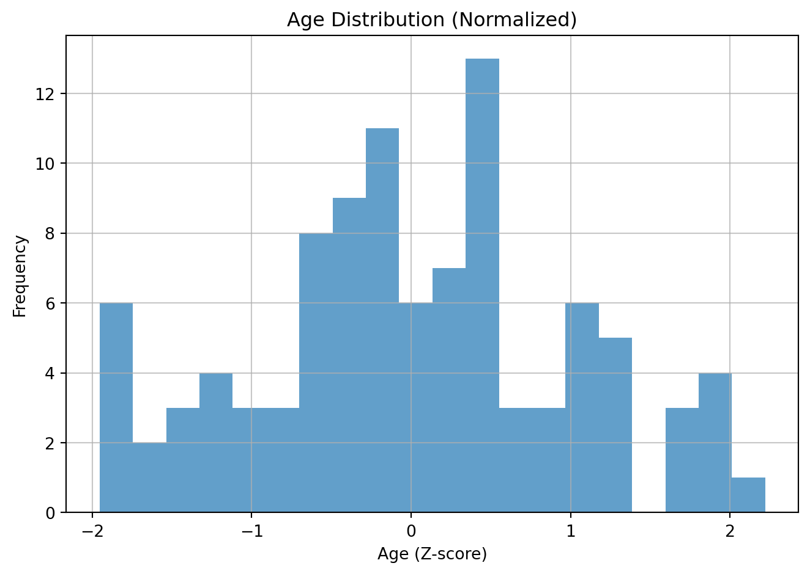
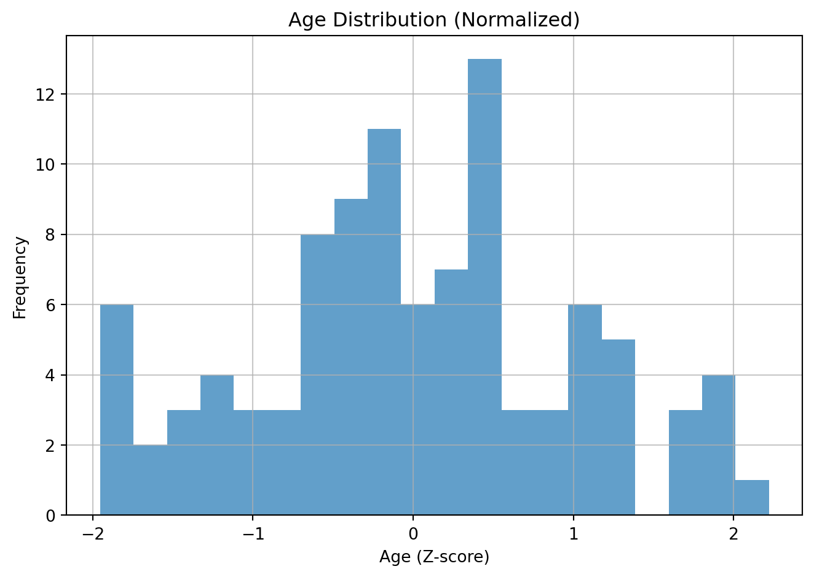
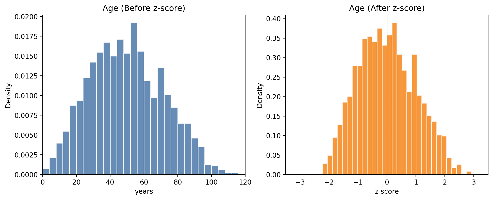
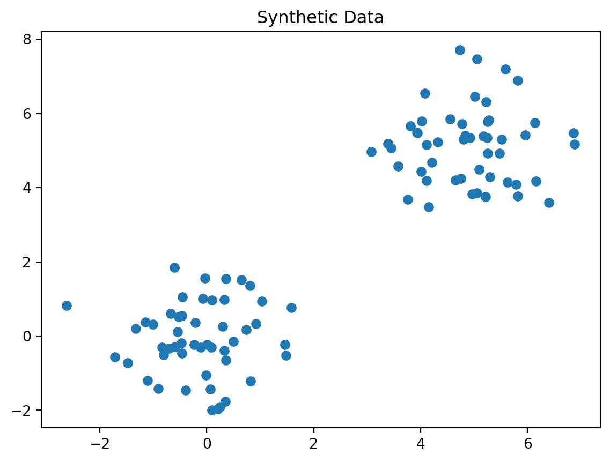
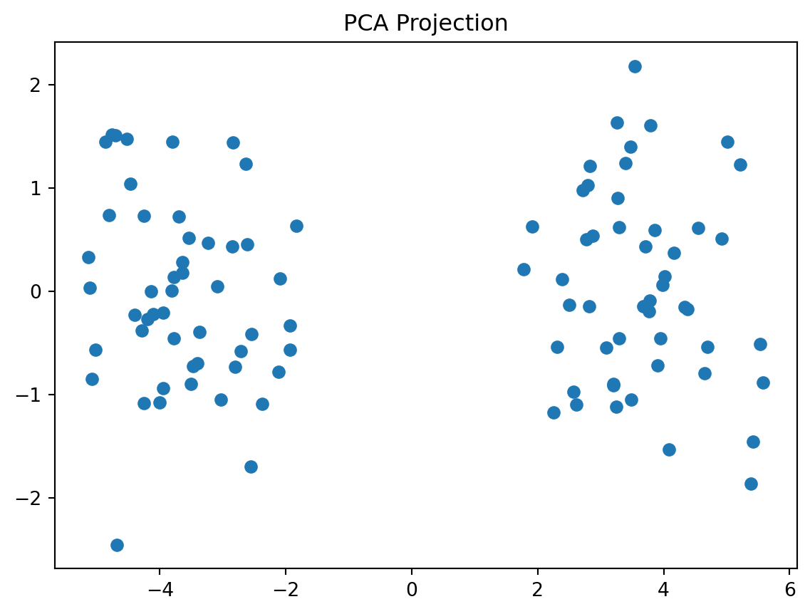
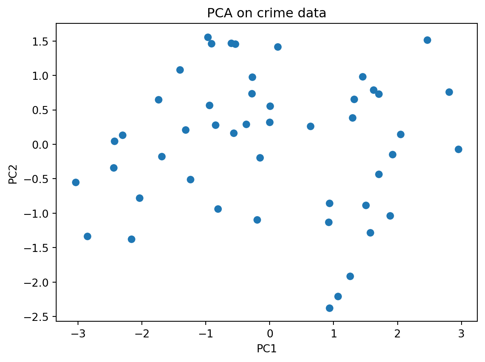
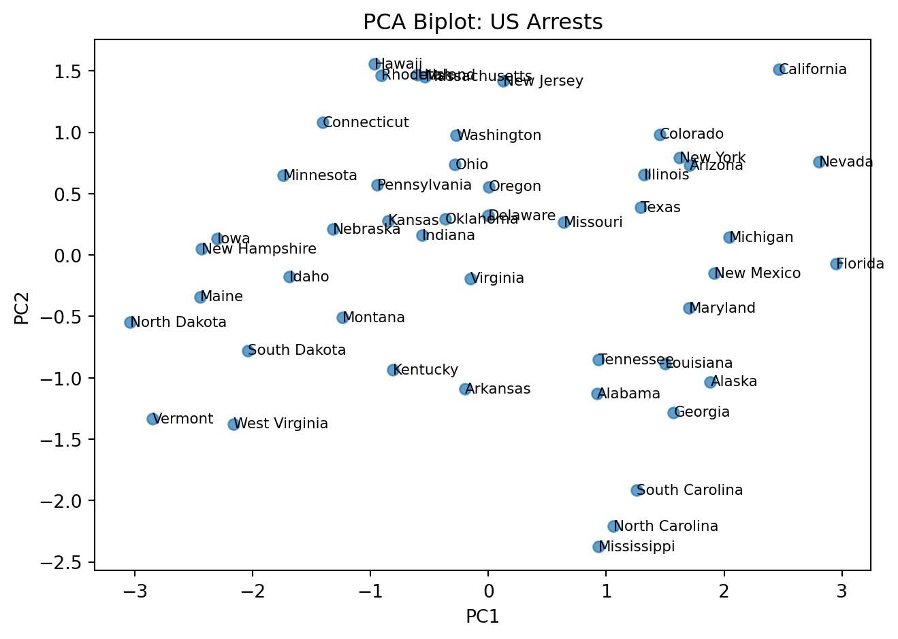

Original data:
Age: mean=43.6, std=13.1
Weight: mean=69.8, std=9.8

This chapter demonstrates basic unsupervised machine learning concepts using Python.
Normalization, specifically Z-score standardization, is a data scaling technique that transforms your data to have a mean of 0 and a standard deviation of 1. This is useful for many machine learning algorithms that are sensitive to the scale of input features.
Intuition: the value represents the number of standard deviations away from the mean for that variable. For example an 80-year-old person might be 3 standard deviations above the mean age.
The formula for Z-score is:
\[ z = \frac{x - \mu}{\sigma} \]
Where: - \(x\) is the original data point. - \(\mu\) is the mean of the data. - \(\sigma\) is the standard deviation of the data.
For example, say you have two variables or features on very different scales.
| Age | Weight (grams) |
|---|---|
| 25 | 65000 |
| 30 | 70000 |
| 35 | 75000 |
| 40 | 80000 |
| 45 | 85000 |
| 50 | 90000 |
| 55 | 95000 |
| 60 | 100000 |
| 65 | 105000 |
| 70 | 110000 |
| 75 | 115000 |
| 80 | 120000 |
If these are not brought on similar scales, weight will have a dispproportionate influence on whatever machine learning model we build.
Hence we normalize each of the features separately, i.e. age is normalized relative to age and weight is normalized relative to weight.
Original data:
Age: mean=43.6, std=13.1
Weight: mean=69.8, std=9.8

weight might be transformed in the following way after normalization:
age.Z-scored mean: -0.00, std: 1.00
NOTE (IMPORTANT CONCEPT):
After normalization, the normalized features are on comparable scales. The features (such as weight and age) no longer have so much variation. They can be used as input to machine learning algorithms.
The rule of thumb is to (almost) always normalize your data before you use it in a machine learning algorithm. (There are a few exceptions and we will point this out in due course).
Level:
You should always visualize your data before trying any algorithms on it.
Discuss in a group. What is wrong with the following plot?

NOTE (IMPORTANT CONCEPT):
Visualize your data before you do any normalization. If there is anything odd about your data, discuss this with the person who gave you the data or did the experiment. This could be an error in the machine that generated the data or a data entry error. If there is justification, you can remove the data point.
Then perform normalization and apply a machine learning technique.
import numpy as np
import pandas as pd
import matplotlib.pyplot as plt
from sklearn.decomposition import PCA
from sklearn.cluster import KMeans
pca = PCA(n_components=2)
X_pca = pca.fit_transform(X)
plt.scatter(X_pca[:, 0], X_pca[:, 1])
plt.title("PCA Projection")
plt.show()
A scree plot is a simple graph that shows how much variance (information) each principal component explains in your data after running PCA. The x-axis shows the principal components (PC1, PC2, etc.), and the y-axis shows the proportion of variance explained by each one.
You can use a scree plot to decide how many principal components to keep: look for the point where the plot levels off (the elbow): this tells you that adding more components doesn’t explain much more variance.
# Scree plot: variance explained by each component
plt.plot(range(1, len(pca.explained_variance_ratio_) + 1), pca.explained_variance_ratio_, marker='o')
plt.title("Scree Plot")
plt.xlabel("Principal Component")
plt.ylabel("Variance Explained Ratio")
plt.show()
A scree plot may have an elbow like the plot below.

Perform PCA on a dataset of US Arrests
Simple method first
!pip install pandas numpy scikit-learn seaborn matplotlibfrom sklearn.decomposition import PCA
from sklearn.preprocessing import StandardScaler
import matplotlib.pyplot as plt
import pandas as pd
# Load the US Arrests data
# Read the USArrests data directly from the GitHub raw URL
url = "https://raw.githubusercontent.com/cambiotraining/ml-unsupervised/main/course_files/data/USArrests.csv"
X = pd.read_csv(url, index_col=0)
# alternatively if you have downloaded the data folder
# on your computer try the following
# import os
# os.getcwd()
# os.chdir("data")
# X = pd.read_csv("USArrests.csv", index_col=0)
# what is in the data?
X.head()| Murder | Assault | UrbanPop | ViolentCrime | |
|---|---|---|---|---|
| State | ||||
| Alabama | 13.2 | 236 | 58 | 21.2 |
| Alaska | 10.0 | 263 | 48 | 44.5 |
| Arizona | 8.1 | 294 | 80 | 31.0 |
| Arkansas | 8.8 | 190 | 50 | 19.5 |
| California | 9.0 | 276 | 91 | 40.6 |
scaler_standard = StandardScaler()
X_scaled = scaler_standard.fit_transform(X)pca_fn = PCA()
X_pca = pca_fn.fit_transform(X_scaled)plt.figure()
plt.scatter(X_pca[:,0], X_pca[:,1])
plt.xlabel("PC1")
plt.ylabel("PC2")
plt.title("PCA on crime data")
plt.show()
Note: These are now categorical, i.e. these take on discrete values (as opposed to continuous).
In machine learning, we will need to deal with them differently.
Discussion: on how to encode these values and how to ensure that these values are equidistant from each other.
# States come from the index
X.index
states = X.index # fetch states and assign it to a variable
# map each state to a code
colour_codes_states = pd.Categorical(states).codes
# pd.Categorical(states): Converts the sequence states (e.g., a list/Index of state names) into a categorical type. It internally builds:
# categories: the unique labels (e.g., all distinct state names)
# codes: integer labels pointing to those categories
plt.figure()
plt.scatter(X_pca[:,0], X_pca[:,1], c = colour_codes_states)
plt.xlabel("PC1")
plt.ylabel("PC2")
plt.title("PCA on crime data (coloured by US state)")
plt.show()
We need slightly more complex code to do this.
#loadings = pca.components_.T * np.sqrt(pca.explained_variance_) # variable vectors
# Plot
fig, ax = plt.subplots()
# Scatter of states
ax.scatter(X_pca[:, 0], X_pca[:, 1], alpha=0.7)
# Label each state
# X.index has the state names
# go through each point (which is each row in the table)
for i, state in enumerate(X.index):
ax.text(X_pca[i, 0], X_pca[i, 1], state, fontsize=8, va="center", ha="left")
ax.set_xlabel("PC1")
ax.set_ylabel("PC2")
ax.set_title("PCA Biplot: US Arrests")
plt.tight_layout()
plt.show()
# get the loadings
# pca.components_ contains the principal component vectors
# transpose them using T
loadings = pca_fn.components_.T
# create a data frame
df_loadings = pd.DataFrame(loadings,
index=X.columns
)
# the first column is PC1, then PC2, and so on ...
print(df_loadings) 0 1 2 3
Murder 0.533785 -0.428765 -0.331927 -0.648891
Assault 0.583489 -0.190485 -0.267593 0.742732
UrbanPop 0.284213 0.865950 -0.386784 -0.140542
ViolentCrime 0.542068 0.173225 0.817690 -0.086823Here is an intutive explanation of the PCA biplot.
NOTE (IMPORTANT CONCEPT):
Distances matter: Points that are far apart represent states with more dissimilar overall crime/urbanization profiles. For example, Vermont being far from California indicates very different feature patterns in the variables used (e.g., assault, murder, urban population).
PC1 (horizontal) ≈ Crime level/severity: Higher values indicate greater overall crime intensity (e.g., higher assault/murder rates), lower values indicate lower crime intensity.
PC2 (vertical) ≈ Urbanization: States to the right tend to have higher urban population and associated traits; those to the left are more rural.
You can inspect the loadings to understand what each principal component represents.
We will have an exercise on this later.
Reading clusters: States that cluster together have similar profiles. States on opposite sides of the plot (e.g., Vermont vs. California) differ substantially along the dominant patterns captured by PC1 and PC2.
Interpretation of loadings:
PC1 (Urbanization axis): All crime variables (Murder, Assault, ViolentCrime) load positively, while UrbanPop has a smaller positive loading. This suggests PC1 captures overall crime levels.
NOTE (IMPORTANT CONCEPT):
Notice, that we have not told PCA anything about the US states
Yet it is still able to find some interesting patterns in the data
This is the strength of unsupervised machine learning
pca package; prettier plotsInstall the pca Python package
!pip install pcafrom pca import pca
import pandas as pd
# Load the US Arrests data (available online)
# Read the USArrests data directly from the GitHub raw URL
url = "https://raw.githubusercontent.com/cambiotraining/ml-unsupervised/main/course_files/data/USArrests.csv"
df = pd.read_csv(url, index_col=0)
print("US Arrests Data (first 5 rows):")
print(df.head())
print("\nData shape:", df.shape)US Arrests Data (first 5 rows):
Murder Assault UrbanPop ViolentCrime
State
Alabama 13.2 236 58 21.2
Alaska 10.0 263 48 44.5
Arizona 8.1 294 80 31.0
Arkansas 8.8 190 50 19.5
California 9.0 276 91 40.6
Data shape: (48, 4)model = pca(normalize=True)
out = model.fit_transform(df)
ax = model.biplot()
model.plot()(<Figure size 1440x960 with 1 Axes>,
<Axes: title={'center': 'Cumulative explained variance\n 3 Principal Components explain [100.0%] of the variance.'}, xlabel='Principal Component', ylabel='Percentage explained variance'>)
model.biplot3d()(<Figure size 3000x2500 with 1 Axes>,
<Axes3D: title={'center': '3 Principal Components explain [100.0%] of the variance'}, xlabel='PC1 (61.6% expl.var)', ylabel='PC2 (24.7% expl.var)', zlabel='PC3 (9.14% expl.var)'>)
Recall
What is being plotted on the axes (PC1 and PC2) are the scores.
The scores for each principal component are calculated as follows:
\[ PC_{1} = \alpha X + \beta Y + \gamma Z + .... \]
where \(X\), \(Y\) and \(Z\) are the normalized features.
The constants \(\alpha\), \(\beta\), \(\gamma\) are determined by the PCA algorithm. They are called the loadings.
print(model.results){'loadings': Murder Assault UrbanPop ViolentCrime
PC1 0.533785 0.583489 0.284213 0.542068
PC2 -0.428765 -0.190485 0.865950 0.173225
PC3 -0.331927 -0.267593 -0.386784 0.817690, 'PC': PC1 PC2 PC3
Alabama 0.923886 -1.127792 -0.437720
Alaska 1.884005 -1.032585 2.032973
Arizona 1.705462 0.730059 0.043498
Arkansas -0.198714 -1.092074 0.111217
California 2.462479 1.513698 0.585558
Colorado 1.453427 0.982671 1.080932
Connecticut -1.406810 1.081895 -0.661238
Delaware -0.003621 0.319738 -0.730442
Florida 2.947649 -0.070435 -0.569823
Georgia 1.571384 -1.281416 -0.326932
Hawaii -0.966398 1.557165 0.034386
Idaho -1.689257 -0.178154 0.241665
Illinois 1.320695 0.653978 -0.681444
Indiana -0.561650 0.161720 0.218372
Iowa -2.302281 0.133259 0.145716
Kansas -0.850716 0.279295 0.013602
Kentucky -0.808869 -0.934920 -0.029023
Louisiana 1.500981 -0.882536 -0.772483
Maine -2.444195 -0.340245 -0.083049
Maryland 1.702710 -0.431039 -0.158134
Massachusetts -0.536401 1.454143 -0.626920
Michigan 2.044350 0.144860 0.383014
Minnesota -1.742422 0.647555 0.133541
Mississippi 0.932617 -2.374555 -0.724196
Missouri 0.637255 0.263934 0.369919
Montana -1.239466 -0.507562 0.236769
Nebraska -1.317489 0.212450 0.160150
Nevada 2.806905 0.760007 1.157898
New Hampshire -2.431886 0.048021 0.018380
New Jersey 0.127587 1.417883 -0.775421
New Mexico 1.917815 -0.148279 0.181459
New York 1.623118 0.790157 -0.646164
North Carolina 1.064086 -2.207350 -0.854340
North Dakota -3.038797 -0.548177 0.281399
Ohio -0.281823 0.736114 -0.041732
Oklahoma -0.366423 0.292555 -0.026415
Oregon 0.003276 0.556212 0.921912
Pennsylvania -0.941353 0.568486 -0.411608
Rhode Island -0.909909 1.464948 -1.387731
South Carolina 1.257310 -1.914756 -0.290121
South Dakota -2.038884 -0.778125 0.375435
Tennessee 0.935690 -0.851392 0.192734
Texas 1.293269 0.387317 -0.490484
Utah -0.602262 1.466342 0.271830
Vermont -2.851337 -1.332665 0.825094
Virginia -0.153441 -0.190521 0.005751
Washington -0.270617 0.975724 0.604878
West Virginia -2.160933 -1.375609 0.097337, 'explained_var': array([0.61629429, 0.86387677, 0.95532444, 1. ]), 'variance_ratio': array([0.61629429, 0.24758248, 0.09144767, 0.04467556]), 'model': PCA(n_components=np.int64(3)), 'scaler': StandardScaler(), 'pcp': np.float64(1.0000000000000002), 'topfeat': PC feature loading type
0 PC1 Assault 0.583489 best
1 PC2 UrbanPop 0.865950 best
2 PC3 ViolentCrime 0.817690 best
3 PC1 Murder 0.533785 weak, 'outliers': y_proba p_raw y_score y_bool y_bool_spe y_score_spe
Alabama 0.883607 0.572223 4.780770 False False 1.457903
Alaska 0.771864 0.061516 12.020355 False False 2.148419
Arizona 0.883607 0.487777 5.447889 False False 1.855152
Arkansas 0.994964 0.849865 2.662427 False False 1.110005
California 0.771864 0.073767 11.512662 False False 2.890516
Colorado 0.883607 0.291940 7.323773 False False 1.754449
Connecticut 0.883607 0.376298 6.434671 False False 1.774715
Delaware 0.997194 0.934870 1.827387 False False 0.319759
Florida 0.827974 0.105185 10.498050 False False 2.948491
Georgia 0.883607 0.334106 6.858767 False False 2.027628
Hawaii 0.883607 0.482129 5.494442 False False 1.832672
Idaho 0.883607 0.589071 4.652640 False False 1.698626
Illinois 0.883607 0.518417 5.200102 False False 1.473744
Indiana 0.997522 0.957121 1.535211 False False 0.584469
Iowa 0.883607 0.341171 6.785183 False False 2.306135
Kansas 0.997194 0.915334 2.046914 False False 0.895390
Kentucky 0.942972 0.766164 3.332046 False False 1.236262
Louisiana 0.883607 0.372576 6.470687 False False 1.741210
Maine 0.883607 0.264681 7.652531 False False 2.467763
Maryland 0.883607 0.543590 5.001739 False False 1.756421
Massachusetts 0.883607 0.512543 5.247023 False False 1.549922
Michigan 0.883607 0.406682 6.149239 False False 2.049476
Minnesota 0.883607 0.477475 5.533020 False False 1.858861
Mississippi 0.827974 0.134373 9.776761 False False 2.551134
Missouri 0.997194 0.908446 2.118885 False False 0.689750
Montana 0.942972 0.701130 3.819185 False False 1.339364
Nebraska 0.942972 0.758317 3.391711 False False 1.334509
Nevada 0.771864 0.052403 12.462954 False False 2.907976
New Hampshire 0.883607 0.317979 7.031119 False False 2.432360
New Jersey 0.883607 0.577856 4.737795 False False 1.423612
New Mexico 0.883607 0.502690 5.326337 False False 1.923539
New York 0.883607 0.382425 6.375898 False False 1.805231
North Carolina 0.827974 0.137996 9.697217 False False 2.450444
North Dakota 0.771864 0.080403 11.269266 False False 3.087845
Ohio 0.997194 0.934716 1.829224 False False 0.788218
Oklahoma 0.997522 0.982272 1.082928 False False 0.468886
Oregon 0.994964 0.843369 2.717557 False False 0.556221
Pennsylvania 0.942972 0.749878 3.455517 False False 1.099691
Rhode Island 0.883607 0.234460 8.050041 False False 1.724530
South Carolina 0.883607 0.243404 7.928295 False False 2.290659
South Dakota 0.883607 0.291991 7.323178 False False 2.182321
Tennessee 0.942972 0.719456 3.683208 False False 1.265063
Texas 0.942972 0.649265 4.202711 False False 1.350022
Utah 0.883607 0.576700 4.746601 False False 1.585206
Vermont 0.771864 0.038043 13.332939 False False 3.147398
Virginia 0.997522 0.997522 0.524914 False False 0.244627
Washington 0.942972 0.761722 3.365861 False False 1.012557
West Virginia 0.883607 0.177782 8.926009 False False 2.561626, 'outliers_params': {'paramT2': (np.float64(-2.4671622769447922e-17), np.float64(1.273765915366402)), 'paramSPE': (array([-9.25185854e-17, -1.38777878e-17]), array([[2.51762774e+00, 6.29946348e-17],
[6.29946348e-17, 1.01140077e+00]]))}}PCA is unsupervised (no labels used)
Works best for linear relationships
Alternatives:
[1] Article on normalization on Wikipedia
[2] ISLP book
[3] Video lectures by the authors of the book Introduction to Statistical Learning in Python
[4] Visual explanations of machine learning algorithms